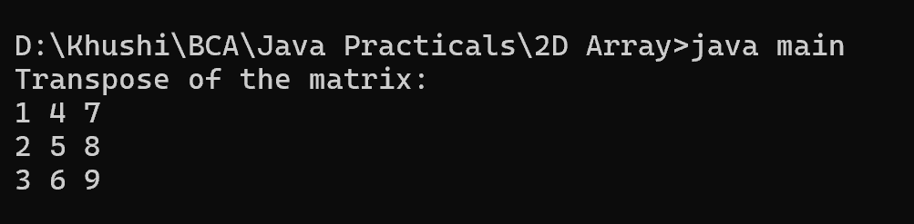

10. Program to find the transpose of a given matrix
class main {
public static void main(String[] args) {
int[][] matrix = {
{1, 2, 3},
{4, 5, 6},
{7, 8, 9}
};
int rows = matrix.length;
int cols = matrix[0].length;
int[][] transpose = new int[cols][rows];
// Finding the transpose
for (int i = 0; i < rows; i++) {
for (int j = 0; j < cols; j++) {
transpose[j][i] = matrix[i][j];
}
}
// Printing the transpose matrix
System.out.println("Transpose of the matrix:");
for (int i = 0; i < cols; i++) {
for (int j = 0; j < rows; j++) {
System.out.print(transpose[i][j] + " ");
}
System.out.println();
}
}
}
